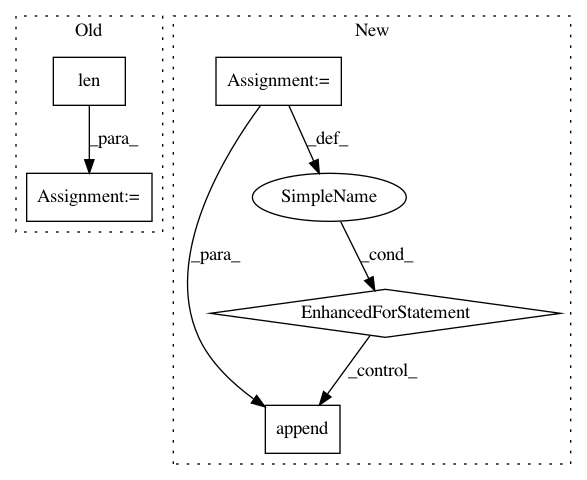

1cda66554188c4504aa94d1bcffd4cef9ee8a997,autokeras/net_transformer.py,,transform,#Any#,79
Before Change
def transform(model):
models = []
layers = model.layers
for index in range(len(layers) - 1):
if isinstance(layers[index], tuple(WEIGHTED_LAYER_FUNC_LIST)):
models.append(to_deeper_model(model, index))
models.append(to_wider_model(model, index))
return models
After Change
models.append(Sequential(copy_conv_model(conv_model), to_deeper_dense_model(dense_model, index)))
models.append(Sequential(copy_conv_model(conv_model), to_wider_dense_model(dense_model, index)))
for layer in conv_model.layers:
// search conv variation
if is_conv_layer(layer):
models.append(Sequential(to_deeper_conv_model(conv_model, layer), dense_model))
models.append(Sequential(to_wider_conv_model(conv_model, layer), dense_model))
models.append(Sequential(to_skip_connection_model(conv_model), dense_model))
return models
In pattern: SUPERPATTERN
Frequency: 3
Non-data size: 5
Instances
Project Name: keras-team/autokeras
Commit Name: 1cda66554188c4504aa94d1bcffd4cef9ee8a997
Time: 2017-12-28
Author: jhfjhfj1@gmail.com
File Name: autokeras/net_transformer.py
Class Name:
Method Name: transform
Project Name: NifTK/NiftyNet
Commit Name: 5af1994def9a52fe1ffd2847b2519f1e27cfbc64
Time: 2017-08-12
Author: wenqi.li@ucl.ac.uk
File Name: niftynet/io/misc_io.py
Class Name:
Method Name: do_resampling
Project Name: chainer/chainercv
Commit Name: f6f0c153fe1f0dacd8ba30ae0dd31a389b66f43f
Time: 2017-05-27
Author: yuyuniitani@gmail.com
File Name: chainercv/evaluations/eval_semantic_segmentation.py
Class Name:
Method Name: _to_cpu